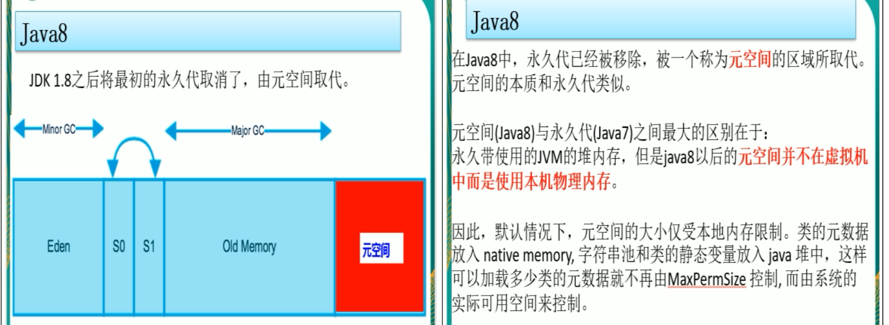
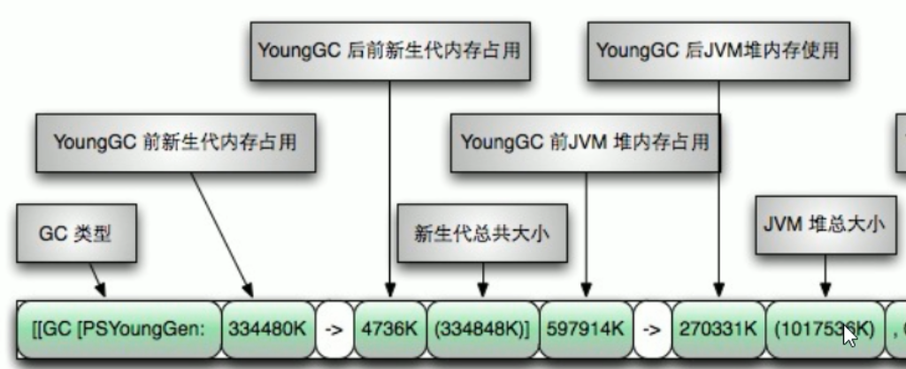

JVM之参数调优
前言
你说你做过JVM调优和参数配置，请问如何盘点查看JVM系统默认值
使用jps和jinfo进行查看
1 | -Xms：初始堆空间 |
-Xms 和 -Xmx最好调整一致，防止JVM频繁进行收集和回收
JVM参数类型
- 标配参数（从JDK1.0 - Java12都在，很稳定）
- -version
- -help
- java -showversion
- X参数（了解）
- -Xint：解释执行
- -Xcomp：第一次使用就编译成本地代码
- -Xmixed：混合模式
- XX参数（重点）
- Boolean类型
- 公式：-XX:+ 或者-某个属性 + 表示开启，-表示关闭
- Case：-XX:-PrintGCDetails：表示关闭了GC详情输出
- key-value类型
- 公式：-XX:属性key=属性value
- 不满意初始值，可以通过下列命令调整
- case：如何：-XX:MetaspaceSize=21807104：查看Java元空间的值
- Boolean类型
查看运行的Java程序，JVM参数是否开启，具体值为多少？
首先我们运行一个HelloGC的java程序
1 | /** |
然后使用下列命令查看它的默认参数
1 | jps：查看java的后台进程 |
具体使用：
1 | jps -l得到进程号 |
1 | 12608 com.moxi.interview.study.GC.HelloGC |
查看到HelloGC的进程号为：12608
我们使用jinfo -flag 然后查看是否开启PrintGCDetails这个参数
1 | jinfo -flag PrintGCDetails 12608 |
得到的内容为
1 | -XX:-PrintGCDetails |
上面提到了，-号表示关闭，即没有开启PrintGCDetails这个参数
下面我们需要在启动HelloGC的时候，增加 PrintGCDetails这个参数，需要在运行程序的时候配置JVM参数

然后在VM Options中加入下面的代码，现在+号表示开启
1 | -XX:+PrintGCDetails |
然后在使用jinfo查看我们的配置
1 | jps -l |
得到的结果为
1 | -XX:+PrintGCDetails |
我们看到原来的-号变成了+号，说明我们通过 VM Options配置的JVM参数已经生效了
使用下列命令，会把jvm的全部默认参数输出
1 | jinfo -flags *** |
题外话（坑题）
两个经典参数：-Xms 和 -Xmx，这两个参数 如何解释
这两个参数，还是属于XX参数，因为取了别名
- -Xms 等价于 -XX:InitialHeapSize ：初始化堆内存（默认只会用最大物理内存的64分1）
- -Xmx 等价于 -XX:MaxHeapSize ：最大堆内存（默认只会用最大物理内存的4分1）
查看JVM默认参数
-XX:+PrintFlagsInitial
- 主要是查看初始默认值
- 公式
- java -XX:+PrintFlagsInitial -version
- java -XX:+PrintFlagsInitial（重要参数）


- -XX:+PrintFlagsFinal：表示修改以后，最终的值
会将JVM的各个结果都进行打印
如果有 := 表示修改过的， = 表示没有修改过的
工作中常用的JVM基本配置参数

查看堆内存
查看JVM的初始化堆内存 -Xms 和最大堆内存 Xmx
1 | /** |
运行结果为：
1 | TOTAL_MEMORY(-Xms) = 257425408(字节)、245.5MB |
-Xms 初始堆内存为：物理内存的1/64 -Xmx 最大堆内存为：系统物理内存的 1/4
打印JVM默认参数
使用 -XX:+PrintCommandLineFlags 打印出JVM的默认的简单初始化参数
比如我的机器输出为：
1 | -XX:InitialHeapSize=266376000 -XX:MaxHeapSize=4262016000 -XX:+PrintCommandLineFlags -XX:+UseCompressedClassPointers -XX:+UseCompressedOops -XX:-UseLargePagesIndividualAllocation -XX:+UseParallelGC |
生活常用调优参数
- -Xms：初始化堆内存，默认为物理内存的1/64，等价于 -XX:initialHeapSize
- -Xmx：最大堆内存，默认为物理内存的1/4，等价于-XX:MaxHeapSize
- -Xss：设计单个线程栈的大小，一般默认为512K~1024K，等价于 -XX:ThreadStackSize
- 使用 jinfo -flag ThreadStackSize 会发现 -XX:ThreadStackSize = 0
- 这个值的大小是取决于平台的
- Linux/x64:1024KB
- OS X：1024KB
- Oracle Solaris：1024KB
- Windows：取决于虚拟内存的大小
- -Xmn：设置年轻代大小
- -XX:MetaspaceSize：设置元空间大小
- 元空间的本质和永久代类似，都是对JVM规范中方法区的实现，不过元空间与永久代之间最大的区别在于：元空间并不在虚拟机中，而是使用本地内存，因此，默认情况下，元空间的大小仅受本地内存限制。
- -Xms10m -Xmx10m -XX:MetaspaceSize=1024m -XX:+PrintFlagsFinal
- 但是默认的元空间大小：只有20多M
- 为了防止在频繁的实例化对象的时候，让元空间出现OOM，因此可以把元空间设置的大一些
- -XX:PrintGCDetails：输出详细GC收集日志信息
- GC
- Full GC
GC日志收集流程图

我们使用一段代码，制造出垃圾回收的过程
首先我们设置一下程序的启动配置: 设置初始堆内存为10M，最大堆内存为10M
1 | -Xms10m -Xmx10m -XX:+PrintGCDetails |
然后用下列代码，创建一个 非常大空间的byte类型数组
1 | byte [] byteArray = new byte[50 * 1024 * 1024]; |
运行后，发现会出现下列错误，这就是OOM：java内存溢出，也就是堆空间不足
1 | Exception in thread "main" java.lang.OutOfMemoryError: Java heap space |
同时还打印出了GC垃圾回收时候的详情
1 | [GC (Allocation Failure) [PSYoungGen: 1972K->504K(2560K)] 1972K->740K(9728K), 0.0156109 secs] [Times: user=0.00 sys=0.00, real=0.03 secs] |
问题发生的原因：
因为们通过 -Xms10m 和 -Xmx10m 只给Java堆栈设置了10M的空间，但是创建了50M的对象，因此就会出现空间不足，而导致出错
同时在垃圾收集的时候，我们看到有两个对象：GC 和 Full GC
GC垃圾收集
GC在新生区
1 | [GC (Allocation Failure) [PSYoungGen: 1972K->504K(2560K)] 1972K->740K(9728K), 0.0156109 secs] [Times: user=0.00 sys=0.00, real=0.03 secs] |
GC (Allocation Failure)：表示分配失败，那么就需要触发年轻代空间中的内容被回收
1 | [PSYoungGen: 1972K->504K(2560K)] 1972K->740K(9728K), 0.0156109 secs] |
参数对应的图为：

Full GC垃圾回收
Full GC大部分发生在养老区
1 | [Full GC (Allocation Failure) [PSYoungGen: 0K->0K(2560K)] [ParOldGen: 648K->630K(7168K)] 648K->630K(9728K), [Metaspace: 3467K->3467K(1056768K)], 0.0058502 secs] [Times: user=0.00 sys=0.00, real=0.01 secs] |

规律：
1 | [名称： GC前内存占用 -> GC后内存占用 (该区内存总大小)] |
当我们出现了老年代都扛不住的时候，就会出现OOM异常
-XX:SurvivorRatio
调节新生代中 eden 和 S0、S1的空间比例，默认为 -XX:SuriviorRatio=8，Eden:S0:S1 = 8:1:1
加入设置成 -XX:SurvivorRatio=4，则为 Eden:S0:S1 = 4:1:1
SurvivorRatio值就是设置eden区的比例占多少，S0和S1相同
Java堆从GC的角度还可以细分为：新生代（Eden区，From Survivor区合To Survivor区）和老年代

- eden、SurvivorFrom复制到SurvivorTo，年龄 + 1
首先，当Eden区满的时候会触发第一次GC，把还活着的对象拷贝到SurvivorFrom去，当Eden区再次触发GC的时候会扫描Eden区合From区域，对这两个区域进行垃圾回收，经过这次回收后还存活的对象，则直接复制到To区域（如果对象的年龄已经到达老年的标准，则赋值到老年代区），通知把这些对象的年龄 + 1
- 清空eden、SurvivorFrom
然后，清空eden，SurvivorFrom中的对象，也即复制之后有交换，谁空谁是to
- SurvivorTo和SurvivorFrom互换
最后，SurvivorTo和SurvivorFrom互换，原SurvivorTo成为下一次GC时的SurvivorFrom区，部分对象会在From和To区域中复制来复制去，如此交换15次（由JVM参数MaxTenuringThreshold决定，这个参数默认为15），最终如果还是存活，就存入老年代

-XX:NewRatio（了解）
配置年轻代new 和老年代old 在堆结构的占比
默认： -XX:NewRatio=2 新生代占1，老年代2，年轻代占整个堆的1/3
-XX:NewRatio=4：新生代占1，老年代占4，年轻代占整个堆的1/5，NewRadio值就是设置老年代的占比，剩下的1个新生代
新生代特别小，会造成频繁的进行GC收集
-XX:MaxTenuringThreshold
设置垃圾最大年龄，SurvivorTo和SurvivorFrom互换，原SurvivorTo成为下一次GC时的SurvivorFrom区，部分对象会在From和To区域中复制来复制去，如此交换15次（由JVM参数MaxTenuringThreshold决定，这个参数默认为15），最终如果还是存活，就存入老年代
这里就是调整这个次数的，默认是15，并且设置的值 在 0~15之间
查看默认进入老年代年龄：jinfo -flag MaxTenuringThreshold 17344
-XX:MaxTenuringThreshold=0：设置垃圾最大年龄。如果设置为0的话，则年轻对象不经过Survivor区，直接进入老年代。对于年老代比较多的应用，可以提高效率。如果将此值设置为一个较大的值，则年轻代对象会在Survivor区进行多次复制，这样可以增加对象再年轻代的存活时间，增加在年轻代即被回收的概念